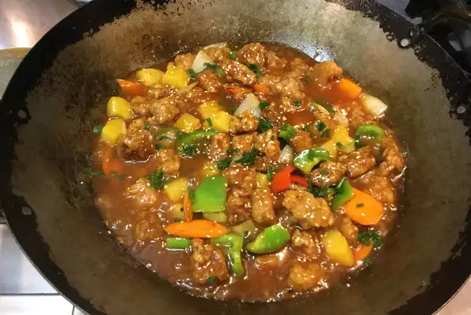

Hong Kong Sweet and Sour Pork

Ingredients
- 2 teaspoons light soy sauce
- ⅛ teaspoon white sugar
- 2 teaspoons potato starch
- 1 teaspoon sesame oil
- ground black pepper to taste
- 1 pound pork loin, cut into 1-inch cubes
- 1 cup water
- ¼ cup ketchup
- ¼ cup ketchup
- ¼ cup white sugar
Directions
- Whisk together the soy sauce, sugar, 2 teaspoons potato starch, sesame oil, and black pepper in a large bowl. Mix the pork into the marinade and turn until all the pork is covered. Allow to rest for 15 minutes.
- To make the sauce, whisk together the water, vinegar, ketchup, 1/4 cup sugar, salt, 2 teaspoons potato starch, and red food coloring in a separate bowl. Set aside.
- Dip the pork pieces in the beaten egg, then dredge in the 1 cup potato starch. Use your hand to press the starch onto the pork, assuring a consistent coating.